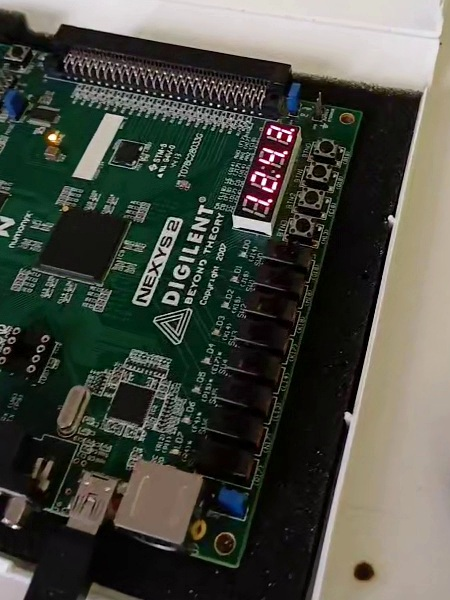
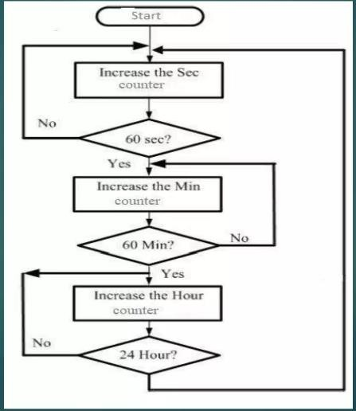
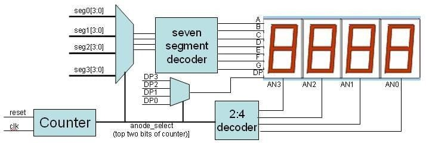
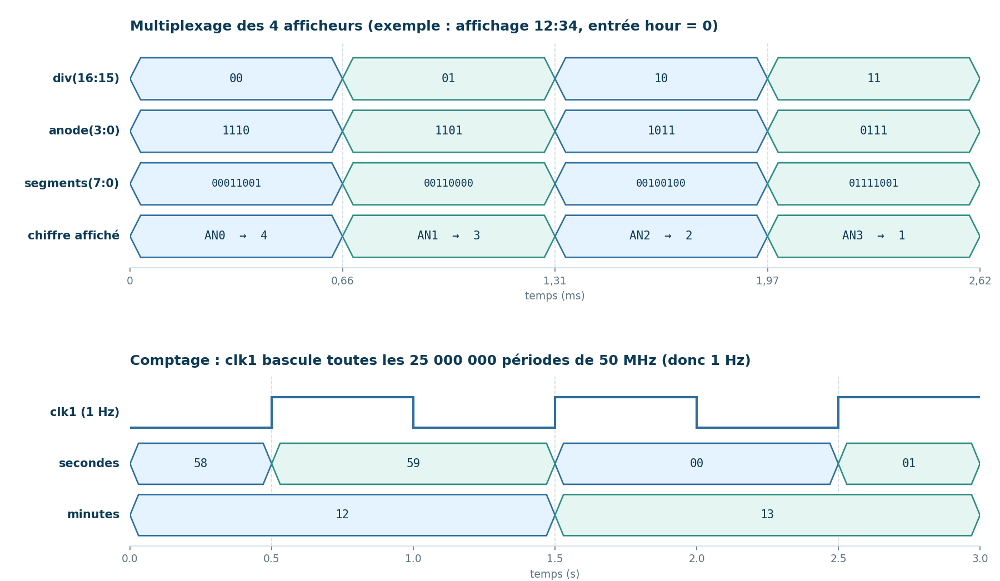

FPGA · VHDL · MASTER 1 INSTRUMENTATION
Horloge numérique
Horloge en VHDL avec afficheurs 7 segments sur carte FPGA
Objectif : concevoir une horloge numérique affichée sur des
afficheurs 7 segments et la tester sur une carte FPGA.
Réalisé : description du circuit en VHDL, synthèse sous
Xilinx ISE et implémentation sur la carte.
FONCTIONNEMENT
Du code VHDL à l'affichage
1. Un compteur divise l'horloge de 50 MHz pour obtenir un
signal de 1 Hz.
2. Des compteurs BCD en cascade comptent les secondes, les
minutes et les heures.
3. Un décodeur 7 segments et un multiplexage des anodes
affichent les chiffres sur 4 afficheurs. L'entrée hour choisit
l'affichage minutes/secondes ou heures/minutes.


DÉMONSTRATION & CODE
L'horloge en fonctionnement sur la carte FPGA.
- Base de temps : un compteur inverse un signal interne toutes les 25 000 000 périodes de l'horloge 50 MHz, ce qui donne 1 Hz.
- Comptage : 6 chiffres BCD en cascade (secondes, minutes, heures), remis à zéro par reset.
- Affichage : table de conversion chiffre → 7 segments, et un diviseur interne qui choisit l'afficheur actif.
Fichier source : digital_clock.vhd
Voir le code sur GitHub →COMPORTEMENT ATTENDU
